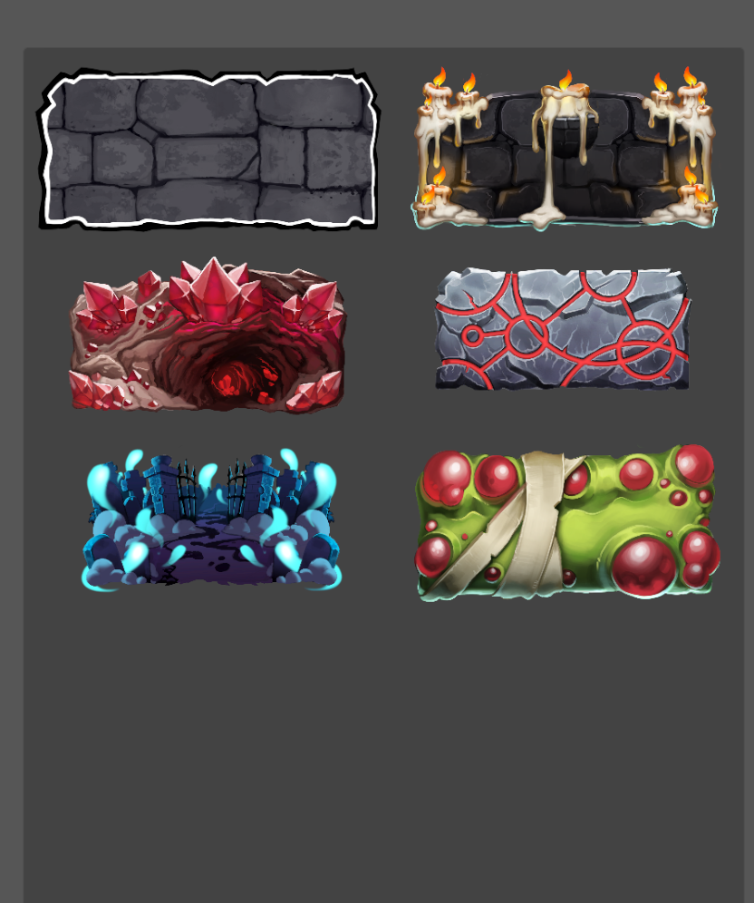
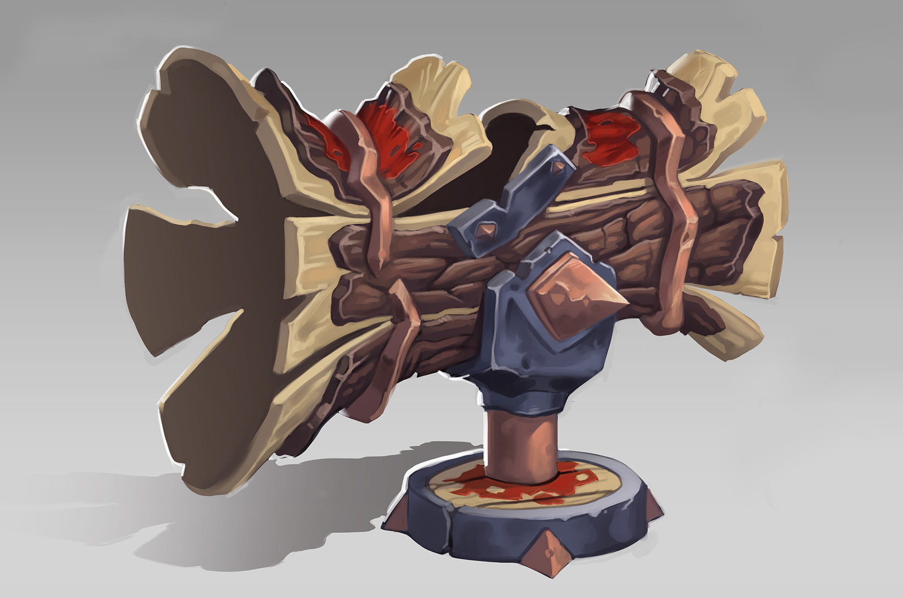

Changelog v0.13
Siamo felici di presentarvi la quarta Settimana del Contenuto di Towers of Minduir!
E’ la più grande release di ToM finora, e non vediamo l’ora di condividere i cambiamenti
Etichette giocatore
Sono disponibili delle etichette del giocatore personalizzate! (appaiono in alto a destra durante un match)

Tutto quello che serve per riceverle e’ invitare nuove persone!
Inviti
Basta entrare nel menu di gioco, premere sull’icona dell’ingranaggio in alto a destra, e premere sul testo sottolineato. Una nuova etichetta verrà sbloccata al decimo match completato dell’invitato
Frag Cannon

E’ nuova, e’ di legno e speriamo che vi piaccia quanto piace a noi! Il Frag Cannon e’ un nuovo tipo di carta: una Struttura.
Strutture
Le strutture, in contrasto alle unita’ ed alle spells, bloccano parte della rigenerazione del mana fino a quando non vengono distrutte, che puo’ accadere in battaglia oppure usando il loro comando.
Frag Cannon
Il frag cannon e’ una struttura che spara dei proiettili facendo danno AoE in un cono nella direzione dell’attacco
Bugfixes
- Risolto un bug che faceva attribuire la vittoria al giocatore sbagliato